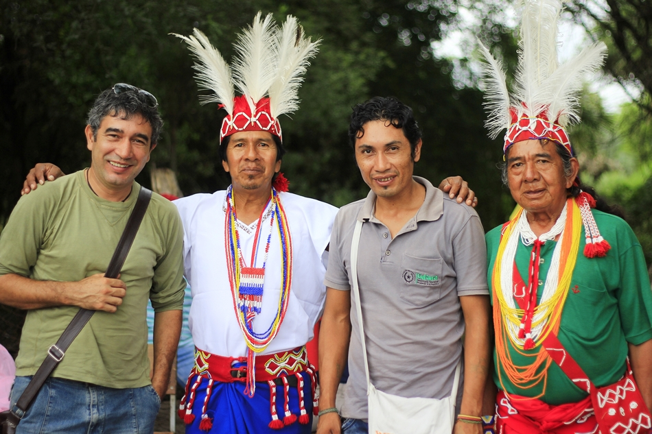

Diversidad Cultural
Paraguay alberga diferentes pueblos indígenas distribuidos en distintas regiones del país, especialmente en el Chaco y la Región Oriental.
Cada comunidad conserva expresiones culturales propias relacionadas con su lengua, espiritualidad, música, medicina tradicional y formas de vida.
